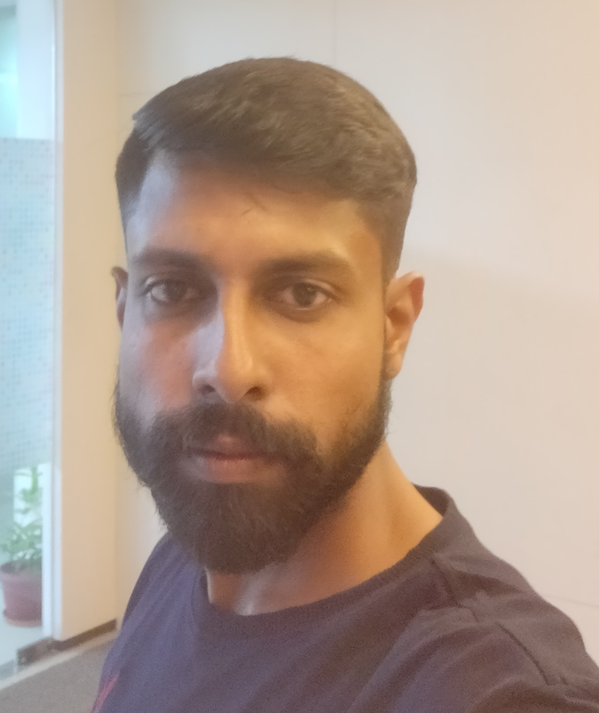

Rakesh Rajendran
rakeshrajendran123@gmail.com | 8129910445

Professional Summary:
In charge of analyzing data, setting up systems, integrating them, and providing training and support for Business Intelligence and analytics applications into use. Follow the standard procedure to make sure all tasks and requests are done on time and to the client's specifications.
Experience
VMware | Technical Support Enginner | June 2021 - Present
-
Providing integrated support to clients on the CloudHealth Multi-Cloud SaaS Platform (AWS, GCP, Azure).
-
Conducting UAT (User Acceptance Testing) of the newly released beta feature in the Sandbox environment prior to general availability.
-
Creating feature requests based on client requirements or from internal testing of the platform.
-
Providing consultation to clients on data analysis, technical analysis, report generation, and dashboard creation.
-
Creating knowledge articles based on features that are not specified in the internal knowledge base.
-
Using existing knowledge articles, Confluence documents, troubleshooting, and debugging skills to resolve customer issues.
-
Working with the TAM, engineering team, and Product Management team to resolve issues throughout their lifecycle.
Finastra | Technical engineer | Oct 2015 - June 2021
- Delivering technical and functional consultation for Fusion Analytics SaaS applications.
- Collaborating with clients on installation, migration, integration, and data connectivity in Windows Server and Microsoft Azure.
- Supporting the ETL process during daily, bi-weekly, or monthly data loads in the production environment.
- Providing consultation to clients on data analysis, data mapping, technical analysis, reports, data models, and dashboard creation.
- Reviewing and verifying test cases/test scenarios, coordinating with the QA/Testing team, and ensuring successful UAT.
- Running queries in SQL Server and assisting clients in extracting data from the application.
- Helping to increase SLO/SLA to 100% and customer satisfaction to 98%.
- Applying in-depth troubleshooting and debugging skills, along with deep knowledge of systems and databases.
- Gathering critical information from meetings with various stakeholders and producing useful reports.
- Preparing data analysis documents, technical documents, and other functional documents.
- Conducting periodic functional training for clients using various presentation tools.
- Prioritizing issues and periodically following up with clients, communicating priorities to management.
- Managing competing resources and priorities, monitoring deliverables, and ensuring timely completion of projects.
- Collaborating with cross-functional teams such as Development, Product Management, and Sales Executives.
- Applying technical and interpersonal skills to foster solid cross-functional relationships.
Certification
-
AWS Cloud Practioner
-
Azure fundamental certified
-
ITIL certified
Skills
-
Cloud technologies : AWS, Azure, GCP
-
Ticketing tool: MSCRM, Zendesk
-
Database: MS SQL
- Other Tools: JIRA, Confluence
Education
- BE | Narayanguru college of engineering | 2013